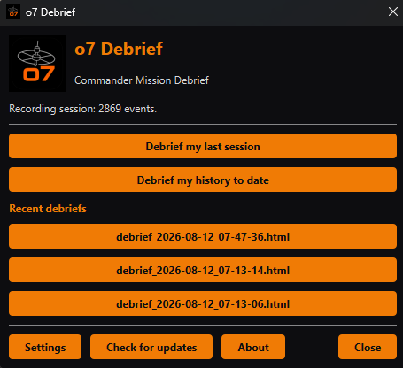
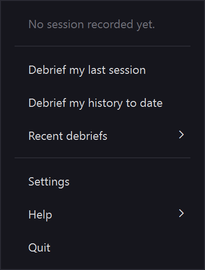

o7 Debrief
Commander Mission Debrief
A local-first app that turns your Elite Dangerous journal into a self-contained mission debrief. Every figure traces back to a real journal field. Nothing is estimated, inferred or padded.
Windows 10 and 11 and Linux as a Flatpak · runs quietly from the system tray
Three ways in


The third is simply launching o7 Debrief again. It does not start a second copy; the one already running opens its home screen, so the Start menu shortcut reaches the app rather than appearing to do nothing.
Supporting o7 Debrief
o7 Debrief is free and stays free. There is no paid tier, no licence key and no feature held back behind a donation. If it has saved you time or simply been useful, a contribution supports its maintenance and continued development.
 Donate
Donate